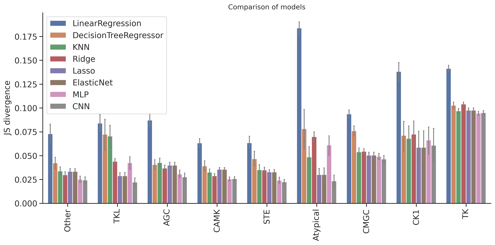

import numpy as np, pandas as pd
import os, random
from katlas.data import *
from katlas.train import *
from fastai.vision.all import *
from katlas.dnn import *DL training: Model comparison on T5 feature
Setup
seed_everything()def_device'cuda'Data
df=pd.read_parquet('train/pspa_t5.parquet')info=Data.get_kinase_info()
info = info[info.pseudo=='0']
info = info[info.kd_ID.notna()]
subfamily_map = info[['kd_ID','subfamily']].drop_duplicates().set_index('kd_ID')['subfamily']
family_map = info[['kd_ID','family']].drop_duplicates().set_index('kd_ID')['family']
group_map = info[['kd_ID','group']].drop_duplicates().set_index('kd_ID')['group']
pspa_info = pd.DataFrame(df.index.tolist(),columns=['kinase'])
pspa_info['subfamily'] = pspa_info.kinase.map(subfamily_map)
pspa_info['family'] = pspa_info.kinase.map(family_map)
pspa_info['group'] = pspa_info.kinase.map(group_map)df=df.reset_index()df.columnsIndex(['index', '-5P', '-4P', '-3P', '-2P', '-1P', '0P', '1P', '2P', '3P',
...
'T5_1014', 'T5_1015', 'T5_1016', 'T5_1017', 'T5_1018', 'T5_1019',
'T5_1020', 'T5_1021', 'T5_1022', 'T5_1023'],
dtype='object', length=1255)# column name of feature and target
feat_col = df.columns[df.columns.str.startswith('T5_')]
target_col = df.columns[~df.columns.isin(feat_col)][1:]feat_colIndex(['T5_0', 'T5_1', 'T5_2', 'T5_3', 'T5_4', 'T5_5', 'T5_6', 'T5_7', 'T5_8',
'T5_9',
...
'T5_1014', 'T5_1015', 'T5_1016', 'T5_1017', 'T5_1018', 'T5_1019',
'T5_1020', 'T5_1021', 'T5_1022', 'T5_1023'],
dtype='object', length=1024)Split
pspa_info.subfamily.value_counts()subfamily
Eph 12
Src 11
NEK 10
CK1 7
STE11 7
..
ZAK 1
Sev 1
Ret 1
Musk 1
Tie 1
Name: count, Length: 149, dtype: int64pspa_info.family.value_counts()family
STE20 27
CAMKL 20
CDK 17
MAPK 12
Eph 12
..
STK33 1
Sev 1
Ret 1
Musk 1
Tie 1
Name: count, Length: 92, dtype: int64pspa_info.group.value_counts()group
TK 78
CAMK 57
CMGC 52
AGC 52
Other 49
STE 39
TKL 25
CK1 11
Atypical 5
Name: count, dtype: int64splits = get_splits(pspa_info, group='group',nfold=9)
split0 = splits[0]GroupKFold(n_splits=9, random_state=None, shuffle=False)
# group in train set: 8
# group in test set: 1Dataset
# dataset
ds = GeneralDataset(df,feat_col,target_col)len(ds)368dl = DataLoader(ds, batch_size=64, shuffle=True)xb,yb = next(iter(dl))
xb.shape,yb.shape(torch.Size([64, 1024]), torch.Size([64, 23, 10]))Model
n_feature = len(feat_col)
n_target = len(target_col)def get_mlp(): return PSSM_model(n_feature,n_target,model='MLP')
def get_cnn(): return PSSM_model(n_feature,n_target,model='CNN')model = get_mlp()logits= model(xb)logits.shapetorch.Size([64, 23, 10])Loss
CE(logits,yb)tensor(3.2301, grad_fn=<MeanBackward0>)Metrics
KLD(logits,yb)tensor(0.4888, grad_fn=<MeanBackward0>)JSD(logits,yb)tensor(0.1021, grad_fn=<MeanBackward0>)CV train
cross-validation
oof_cnn = train_dl_cv(df,feat_col,target_col,
splits = splits,
model_func = get_cnn,
n_epoch=20,lr=3e-3,save='cnn')------fold0------
lr in training is 0.003| epoch | train_loss | valid_loss | KLD | JSD | time |
|---|---|---|---|---|---|
| 0 | 3.269060 | 3.143546 | 0.404985 | 0.081564 | 00:01 |
| 1 | 3.223662 | 3.147182 | 0.408622 | 0.083544 | 00:00 |
| 2 | 3.187536 | 3.175212 | 0.436651 | 0.091066 | 00:00 |
| 3 | 3.168146 | 3.216301 | 0.477740 | 0.099706 | 00:00 |
| 4 | 3.147557 | 3.231566 | 0.493005 | 0.093356 | 00:00 |
| 5 | 3.121749 | 3.311443 | 0.572882 | 0.093714 | 00:00 |
| 6 | 3.083850 | 3.368428 | 0.629867 | 0.097433 | 00:00 |
| 7 | 3.045823 | 3.430662 | 0.692102 | 0.095945 | 00:00 |
| 8 | 3.008982 | 3.513947 | 0.775385 | 0.096181 | 00:00 |
| 9 | 2.975007 | 3.527397 | 0.788837 | 0.095878 | 00:00 |
| 10 | 2.945746 | 3.548940 | 0.810379 | 0.095623 | 00:00 |
| 11 | 2.921519 | 3.570338 | 0.831777 | 0.096343 | 00:00 |
| 12 | 2.900580 | 3.571254 | 0.832693 | 0.095262 | 00:00 |
| 13 | 2.883183 | 3.574004 | 0.835444 | 0.095764 | 00:00 |
| 14 | 2.867993 | 3.589709 | 0.851148 | 0.097328 | 00:00 |
| 15 | 2.855134 | 3.583238 | 0.844677 | 0.095302 | 00:00 |
| 16 | 2.844318 | 3.581508 | 0.842947 | 0.094802 | 00:00 |
| 17 | 2.835052 | 3.586241 | 0.847680 | 0.094904 | 00:00 |
| 18 | 2.827313 | 3.586015 | 0.847454 | 0.095045 | 00:00 |
| 19 | 2.820956 | 3.586493 | 0.847932 | 0.094981 | 00:00 |
------fold1------
lr in training is 0.003| epoch | train_loss | valid_loss | KLD | JSD | time |
|---|---|---|---|---|---|
| 0 | 3.208314 | 3.117808 | 0.358415 | 0.079423 | 00:00 |
| 1 | 3.091133 | 2.973638 | 0.214245 | 0.053701 | 00:00 |
| 2 | 3.022374 | 2.917496 | 0.158104 | 0.037164 | 00:00 |
| 3 | 2.980688 | 2.889112 | 0.129719 | 0.030823 | 00:00 |
| 4 | 2.959795 | 2.898824 | 0.139432 | 0.033074 | 00:00 |
| 5 | 2.940522 | 2.883660 | 0.124267 | 0.029325 | 00:00 |
| 6 | 2.921029 | 2.878609 | 0.119217 | 0.028216 | 00:00 |
| 7 | 2.902735 | 2.869094 | 0.109702 | 0.025721 | 00:00 |
| 8 | 2.887330 | 2.868969 | 0.109577 | 0.025599 | 00:00 |
| 9 | 2.873613 | 2.872907 | 0.113515 | 0.026461 | 00:00 |
| 10 | 2.860784 | 2.872873 | 0.113481 | 0.026225 | 00:00 |
| 11 | 2.849614 | 2.868307 | 0.108915 | 0.025198 | 00:00 |
| 12 | 2.839491 | 2.873788 | 0.114396 | 0.026422 | 00:00 |
| 13 | 2.830676 | 2.868858 | 0.109465 | 0.025601 | 00:00 |
| 14 | 2.823313 | 2.874800 | 0.115407 | 0.026648 | 00:00 |
| 15 | 2.816295 | 2.866525 | 0.107132 | 0.024936 | 00:00 |
| 16 | 2.810380 | 2.870265 | 0.110873 | 0.025660 | 00:00 |
| 17 | 2.805311 | 2.869317 | 0.109924 | 0.025484 | 00:00 |
| 18 | 2.800941 | 2.868959 | 0.109566 | 0.025435 | 00:00 |
| 19 | 2.797494 | 2.870798 | 0.111405 | 0.025791 | 00:00 |
------fold2------
lr in training is 0.003| epoch | train_loss | valid_loss | KLD | JSD | time |
|---|---|---|---|---|---|
| 0 | 3.207323 | 3.115180 | 0.398577 | 0.086718 | 00:00 |
| 1 | 3.097981 | 2.949997 | 0.233394 | 0.056430 | 00:00 |
| 2 | 3.025096 | 2.871349 | 0.154746 | 0.034154 | 00:00 |
| 3 | 2.984505 | 2.890811 | 0.174208 | 0.039029 | 00:00 |
| 4 | 2.961992 | 2.936154 | 0.219550 | 0.045950 | 00:00 |
| 5 | 2.947332 | 2.864819 | 0.148216 | 0.033121 | 00:00 |
| 6 | 2.927917 | 2.851729 | 0.135126 | 0.030623 | 00:00 |
| 7 | 2.908772 | 2.825195 | 0.108592 | 0.024916 | 00:00 |
| 8 | 2.892562 | 2.845464 | 0.128861 | 0.030083 | 00:00 |
| 9 | 2.878802 | 2.841273 | 0.124670 | 0.028827 | 00:00 |
| 10 | 2.866316 | 2.843637 | 0.127034 | 0.029812 | 00:00 |
| 11 | 2.855637 | 2.836118 | 0.119515 | 0.027748 | 00:00 |
| 12 | 2.846589 | 2.832935 | 0.116332 | 0.027080 | 00:00 |
| 13 | 2.838424 | 2.835726 | 0.119123 | 0.027565 | 00:00 |
| 14 | 2.831281 | 2.835740 | 0.119137 | 0.027858 | 00:00 |
| 15 | 2.824760 | 2.836478 | 0.119874 | 0.027920 | 00:00 |
| 16 | 2.819135 | 2.836669 | 0.120066 | 0.028054 | 00:00 |
| 17 | 2.813901 | 2.836018 | 0.119414 | 0.027880 | 00:00 |
| 18 | 2.809481 | 2.835162 | 0.118558 | 0.027623 | 00:00 |
| 19 | 2.805690 | 2.835153 | 0.118550 | 0.027605 | 00:00 |
------fold3------
lr in training is 0.003| epoch | train_loss | valid_loss | KLD | JSD | time |
|---|---|---|---|---|---|
| 0 | 3.212164 | 3.133327 | 0.442183 | 0.092641 | 00:00 |
| 1 | 3.106295 | 3.004756 | 0.313612 | 0.071707 | 00:00 |
| 2 | 3.031961 | 2.913970 | 0.222826 | 0.046670 | 00:00 |
| 3 | 2.991078 | 2.910705 | 0.219561 | 0.044440 | 00:00 |
| 4 | 2.967807 | 2.932624 | 0.241480 | 0.047336 | 00:00 |
| 5 | 2.950043 | 2.920186 | 0.229042 | 0.044831 | 00:00 |
| 6 | 2.930707 | 2.924624 | 0.233481 | 0.044545 | 00:00 |
| 7 | 2.912056 | 2.924119 | 0.232976 | 0.046182 | 00:00 |
| 8 | 2.895589 | 2.927319 | 0.236175 | 0.045777 | 00:00 |
| 9 | 2.881679 | 2.944932 | 0.253788 | 0.049072 | 00:00 |
| 10 | 2.874621 | 2.918363 | 0.227219 | 0.043250 | 00:01 |
| 11 | 2.865599 | 2.937680 | 0.246536 | 0.045307 | 00:00 |
| 12 | 2.855621 | 2.941553 | 0.250409 | 0.047418 | 00:00 |
| 13 | 2.847044 | 2.929435 | 0.238291 | 0.046189 | 00:00 |
| 14 | 2.839755 | 2.940788 | 0.249644 | 0.047378 | 00:00 |
| 15 | 2.832605 | 2.935419 | 0.244275 | 0.045755 | 00:00 |
| 16 | 2.827509 | 2.936834 | 0.245690 | 0.046259 | 00:00 |
| 17 | 2.821800 | 2.936816 | 0.245672 | 0.046310 | 00:00 |
| 18 | 2.817129 | 2.936852 | 0.245708 | 0.046441 | 00:00 |
| 19 | 2.812903 | 2.936368 | 0.245224 | 0.046412 | 00:00 |
------fold4------
lr in training is 0.003| epoch | train_loss | valid_loss | KLD | JSD | time |
|---|---|---|---|---|---|
| 0 | 3.194703 | 3.130977 | 0.341532 | 0.074929 | 00:00 |
| 1 | 3.085588 | 2.979797 | 0.190353 | 0.049329 | 00:00 |
| 2 | 3.013181 | 2.915592 | 0.126147 | 0.030893 | 00:00 |
| 3 | 2.973877 | 2.928494 | 0.139050 | 0.034132 | 00:00 |
| 4 | 2.948701 | 2.913154 | 0.123709 | 0.029253 | 00:00 |
| 5 | 2.930085 | 2.901232 | 0.111787 | 0.026251 | 00:00 |
| 6 | 2.916653 | 2.904090 | 0.114645 | 0.026807 | 00:00 |
| 7 | 2.899753 | 2.907431 | 0.117986 | 0.027358 | 00:00 |
| 8 | 2.883612 | 2.907530 | 0.118085 | 0.027281 | 00:00 |
| 9 | 2.868085 | 2.901319 | 0.111874 | 0.025705 | 00:00 |
| 10 | 2.853968 | 2.900857 | 0.111413 | 0.025969 | 00:00 |
| 11 | 2.842516 | 2.899069 | 0.109624 | 0.025252 | 00:00 |
| 12 | 2.832248 | 2.896469 | 0.107024 | 0.024881 | 00:00 |
| 13 | 2.823528 | 2.895822 | 0.106378 | 0.024758 | -1:59:59 |
| 14 | 2.815598 | 2.892243 | 0.102798 | 0.023783 | 00:00 |
| 15 | 2.809208 | 2.894634 | 0.105189 | 0.024339 | 00:00 |
| 16 | 2.803236 | 2.895056 | 0.105612 | 0.024392 | 00:00 |
| 17 | 2.798623 | 2.894188 | 0.104743 | 0.024226 | 00:00 |
| 18 | 2.794693 | 2.894770 | 0.105325 | 0.024397 | 00:00 |
| 19 | 2.790938 | 2.894322 | 0.104877 | 0.024302 | 00:00 |
------fold5------
lr in training is 0.003| epoch | train_loss | valid_loss | KLD | JSD | time |
|---|---|---|---|---|---|
| 0 | 3.199997 | 3.129761 | 0.340951 | 0.074561 | 00:00 |
| 1 | 3.075929 | 2.966693 | 0.177883 | 0.046553 | 00:00 |
| 2 | 3.002883 | 2.903497 | 0.114686 | 0.028490 | 00:00 |
| 3 | 2.964937 | 2.902469 | 0.113658 | 0.027166 | 00:00 |
| 4 | 2.942972 | 2.900843 | 0.112033 | 0.027254 | 00:00 |
| 5 | 2.928877 | 2.899299 | 0.110489 | 0.027179 | 00:00 |
| 6 | 2.910979 | 2.892999 | 0.104189 | 0.025580 | 00:00 |
| 7 | 2.892474 | 2.903407 | 0.114597 | 0.027419 | 00:00 |
| 8 | 2.876405 | 2.880818 | 0.092008 | 0.022334 | 00:00 |
| 9 | 2.861168 | 2.885040 | 0.096230 | 0.023397 | 00:00 |
| 10 | 2.848615 | 2.875726 | 0.086915 | 0.021212 | 00:00 |
| 11 | 2.838090 | 2.879966 | 0.091155 | 0.021947 | 00:00 |
| 12 | 2.829193 | 2.876115 | 0.087305 | 0.021194 | 00:00 |
| 13 | 2.820646 | 2.882905 | 0.094094 | 0.023022 | 00:00 |
| 14 | 2.813677 | 2.882934 | 0.094123 | 0.022730 | 00:00 |
| 15 | 2.807501 | 2.883899 | 0.095089 | 0.023176 | 00:00 |
| 16 | 2.801921 | 2.882332 | 0.093521 | 0.022763 | 00:00 |
| 17 | 2.797628 | 2.881665 | 0.092854 | 0.022552 | 00:00 |
| 18 | 2.793886 | 2.882133 | 0.093322 | 0.022644 | 00:01 |
| 19 | 2.790486 | 2.881597 | 0.092787 | 0.022498 | 00:00 |
------fold6------
lr in training is 0.003| epoch | train_loss | valid_loss | KLD | JSD | time |
|---|---|---|---|---|---|
| 0 | 3.194320 | 3.125801 | 0.310535 | 0.070329 | 00:00 |
| 1 | 3.076676 | 2.948623 | 0.133357 | 0.035381 | 00:00 |
| 2 | 3.005836 | 2.954429 | 0.139163 | 0.032063 | 00:00 |
| 3 | 2.967523 | 2.950755 | 0.135489 | 0.031137 | 00:00 |
| 4 | 2.949190 | 2.935955 | 0.120688 | 0.028899 | 00:00 |
| 5 | 2.929599 | 2.925230 | 0.109964 | 0.024822 | 00:00 |
| 6 | 2.909208 | 2.916939 | 0.101673 | 0.023810 | 00:00 |
| 7 | 2.889302 | 2.964673 | 0.149406 | 0.034152 | 00:00 |
| 8 | 2.872472 | 3.053467 | 0.238200 | 0.041788 | 00:00 |
| 9 | 2.857490 | 3.030991 | 0.215725 | 0.038701 | 00:00 |
| 10 | 2.845153 | 3.009413 | 0.194146 | 0.038094 | 00:00 |
| 11 | 2.834631 | 3.039492 | 0.224225 | 0.040353 | 00:00 |
| 12 | 2.826049 | 2.916903 | 0.101637 | 0.023530 | 00:00 |
| 13 | 2.818126 | 2.911845 | 0.096579 | 0.022495 | 00:00 |
| 14 | 2.811524 | 2.914006 | 0.098740 | 0.023023 | 00:00 |
| 15 | 2.805404 | 2.909503 | 0.094237 | 0.022106 | 00:00 |
| 16 | 2.800207 | 2.909804 | 0.094538 | 0.022054 | 00:00 |
| 17 | 2.796073 | 2.910941 | 0.095674 | 0.022245 | 00:00 |
| 18 | 2.792119 | 2.911169 | 0.095903 | 0.022274 | 00:00 |
| 19 | 2.788670 | 2.910234 | 0.094968 | 0.022100 | 00:00 |
------fold7------
lr in training is 0.003| epoch | train_loss | valid_loss | KLD | JSD | time |
|---|---|---|---|---|---|
| 0 | 3.193444 | 3.132987 | 0.470942 | 0.100316 | 00:00 |
| 1 | 3.075158 | 2.953928 | 0.291882 | 0.064369 | 00:00 |
| 2 | 3.004199 | 2.975640 | 0.313595 | 0.064038 | 00:00 |
| 3 | 2.964350 | 3.090348 | 0.428302 | 0.083974 | 00:00 |
| 4 | 2.943624 | 3.035332 | 0.373287 | 0.070942 | 00:00 |
| 5 | 2.922046 | 2.968457 | 0.306412 | 0.065235 | 00:00 |
| 6 | 2.901327 | 2.954379 | 0.292333 | 0.065219 | -1:59:59 |
| 7 | 2.882046 | 2.925243 | 0.263198 | 0.060871 | 00:00 |
| 8 | 2.866063 | 2.936579 | 0.274533 | 0.064218 | 00:00 |
| 9 | 2.852979 | 2.945917 | 0.283871 | 0.062147 | 00:00 |
| 10 | 2.841709 | 2.916834 | 0.254789 | 0.060364 | 00:00 |
| 11 | 2.832586 | 2.954140 | 0.292095 | 0.063815 | 00:00 |
| 12 | 2.824114 | 2.961896 | 0.299851 | 0.067524 | 00:00 |
| 13 | 2.816724 | 2.930872 | 0.268827 | 0.059107 | 00:00 |
| 14 | 2.810433 | 2.924781 | 0.262736 | 0.060047 | 00:00 |
| 15 | 2.805051 | 2.928467 | 0.266421 | 0.059658 | 00:00 |
| 16 | 2.800364 | 2.932495 | 0.270450 | 0.060461 | 00:00 |
| 17 | 2.796210 | 2.934587 | 0.272542 | 0.060946 | 00:00 |
| 18 | 2.793103 | 2.929379 | 0.267334 | 0.060319 | 00:00 |
| 19 | 2.790570 | 2.931830 | 0.269785 | 0.060809 | 00:00 |
------fold8------
lr in training is 0.003| epoch | train_loss | valid_loss | KLD | JSD | time |
|---|---|---|---|---|---|
| 0 | 3.204390 | 3.128783 | 0.330651 | 0.071957 | 00:00 |
| 1 | 3.082807 | 2.936002 | 0.137870 | 0.031859 | 00:00 |
| 2 | 3.005090 | 2.969775 | 0.171644 | 0.036953 | 00:00 |
| 3 | 2.965562 | 2.997628 | 0.199497 | 0.044284 | 00:00 |
| 4 | 2.942865 | 2.932713 | 0.134581 | 0.028845 | 00:00 |
| 5 | 2.922158 | 2.932485 | 0.134353 | 0.029581 | 00:00 |
| 6 | 2.903975 | 2.920239 | 0.122107 | 0.026156 | 00:00 |
| 7 | 2.885199 | 2.901689 | 0.103558 | 0.022120 | 00:00 |
| 8 | 2.868658 | 2.909636 | 0.111505 | 0.023997 | 00:00 |
| 9 | 2.854479 | 2.915422 | 0.117290 | 0.025359 | 00:00 |
| 10 | 2.842377 | 2.908000 | 0.109868 | 0.023234 | 00:00 |
| 11 | 2.833321 | 2.904814 | 0.106682 | 0.023166 | 00:00 |
| 12 | 2.824632 | 2.907447 | 0.109316 | 0.024112 | 00:00 |
| 13 | 2.817395 | 2.901404 | 0.103273 | 0.022250 | 00:00 |
| 14 | 2.811185 | 2.907396 | 0.109264 | 0.023505 | 00:00 |
| 15 | 2.805175 | 2.903952 | 0.105820 | 0.022850 | 00:00 |
| 16 | 2.799963 | 2.907275 | 0.109143 | 0.023509 | 00:00 |
| 17 | 2.795720 | 2.908115 | 0.109983 | 0.023676 | 00:00 |
| 18 | 2.792551 | 2.907698 | 0.109566 | 0.023603 | 00:00 |
| 19 | 2.790073 | 2.907019 | 0.108887 | 0.023489 | 00:00 |
oof_mlp = train_dl_cv(df,feat_col,target_col,
splits = splits,
model_func = get_mlp,
n_epoch=20,lr=3e-3,save='mlp')------fold0------
lr in training is 0.003| epoch | train_loss | valid_loss | KLD | JSD | time |
|---|---|---|---|---|---|
| 0 | 3.171476 | 3.139420 | 0.400859 | 0.080985 | 00:00 |
| 1 | 3.106711 | 3.147713 | 0.409152 | 0.082218 | 00:00 |
| 2 | 3.038125 | 3.160561 | 0.422000 | 0.083707 | 00:00 |
| 3 | 2.976095 | 3.189467 | 0.450906 | 0.085103 | 00:00 |
| 4 | 2.928933 | 3.253317 | 0.514757 | 0.087918 | 00:00 |
| 5 | 2.895859 | 3.290741 | 0.552180 | 0.087818 | 00:00 |
| 6 | 2.871152 | 3.370811 | 0.632249 | 0.091517 | 00:00 |
| 7 | 2.852960 | 3.411198 | 0.672637 | 0.090949 | 00:00 |
| 8 | 2.838817 | 3.496814 | 0.758253 | 0.091359 | 00:00 |
| 9 | 2.827737 | 3.521644 | 0.783083 | 0.093565 | 00:00 |
| 10 | 2.818174 | 3.498032 | 0.759471 | 0.093064 | 00:00 |
| 11 | 2.810489 | 3.504961 | 0.766400 | 0.094115 | 00:00 |
| 12 | 2.803670 | 3.508696 | 0.770135 | 0.092760 | 00:00 |
| 13 | 2.797866 | 3.541964 | 0.803403 | 0.094965 | 00:00 |
| 14 | 2.792816 | 3.547325 | 0.808764 | 0.094005 | 00:00 |
| 15 | 2.788567 | 3.548905 | 0.810344 | 0.094359 | 00:00 |
| 16 | 2.784840 | 3.552236 | 0.813675 | 0.094531 | 00:00 |
| 17 | 2.781688 | 3.556740 | 0.818179 | 0.094105 | 00:00 |
| 18 | 2.779126 | 3.557160 | 0.818599 | 0.094202 | 00:00 |
| 19 | 2.776936 | 3.562564 | 0.824003 | 0.094342 | 00:00 |
------fold1------
lr in training is 0.003| epoch | train_loss | valid_loss | KLD | JSD | time |
|---|---|---|---|---|---|
| 0 | 3.138040 | 3.135045 | 0.375653 | 0.082271 | 00:00 |
| 1 | 3.054276 | 3.113542 | 0.354149 | 0.079574 | 00:00 |
| 2 | 2.989687 | 3.048094 | 0.288702 | 0.069778 | 00:00 |
| 3 | 2.937330 | 2.952537 | 0.193145 | 0.050103 | -1:59:59 |
| 4 | 2.901045 | 2.872171 | 0.112778 | 0.028355 | 00:00 |
| 5 | 2.875492 | 2.863093 | 0.103700 | 0.025160 | 00:00 |
| 6 | 2.856277 | 2.865705 | 0.106313 | 0.025039 | 00:00 |
| 7 | 2.840961 | 2.864216 | 0.104823 | 0.024369 | 00:00 |
| 8 | 2.829274 | 2.864235 | 0.104842 | 0.024402 | 00:00 |
| 9 | 2.820478 | 2.877947 | 0.118554 | 0.027575 | 00:00 |
| 10 | 2.812226 | 2.873299 | 0.113906 | 0.026126 | 00:00 |
| 11 | 2.806044 | 2.869767 | 0.110374 | 0.025534 | 00:00 |
| 12 | 2.800019 | 2.872890 | 0.113498 | 0.026378 | 00:00 |
| 13 | 2.794942 | 2.871101 | 0.111708 | 0.025842 | 00:00 |
| 14 | 2.790824 | 2.871950 | 0.112557 | 0.025829 | 00:00 |
| 15 | 2.786819 | 2.872271 | 0.112878 | 0.025944 | 00:00 |
| 16 | 2.783419 | 2.869001 | 0.109609 | 0.025354 | 00:00 |
| 17 | 2.780620 | 2.871257 | 0.111865 | 0.025823 | 00:00 |
| 18 | 2.778407 | 2.871228 | 0.111836 | 0.025827 | 00:00 |
| 19 | 2.776483 | 2.869788 | 0.110395 | 0.025548 | 00:00 |
------fold2------
lr in training is 0.003| epoch | train_loss | valid_loss | KLD | JSD | time |
|---|---|---|---|---|---|
| 0 | 3.132754 | 3.134609 | 0.418006 | 0.089472 | 00:00 |
| 1 | 3.046801 | 3.113223 | 0.396620 | 0.086776 | 00:00 |
| 2 | 2.980770 | 3.055556 | 0.338953 | 0.078529 | 00:00 |
| 3 | 2.932360 | 2.969013 | 0.252410 | 0.062473 | 00:00 |
| 4 | 2.899219 | 2.899032 | 0.182429 | 0.046023 | 00:00 |
| 5 | 2.875994 | 2.873559 | 0.156956 | 0.038564 | 00:00 |
| 6 | 2.858054 | 2.845880 | 0.129277 | 0.030850 | 00:00 |
| 7 | 2.844874 | 2.827710 | 0.111107 | 0.026074 | 00:00 |
| 8 | 2.834472 | 2.832326 | 0.115723 | 0.026925 | 00:00 |
| 9 | 2.826840 | 2.842240 | 0.125637 | 0.030043 | 00:00 |
| 10 | 2.819004 | 2.836573 | 0.119970 | 0.027737 | 00:00 |
| 11 | 2.812238 | 2.861251 | 0.144647 | 0.033234 | 00:00 |
| 12 | 2.806651 | 2.852784 | 0.136180 | 0.031518 | 00:00 |
| 13 | 2.801448 | 2.847494 | 0.130891 | 0.030155 | 00:00 |
| 14 | 2.796698 | 2.846005 | 0.129401 | 0.029958 | 00:00 |
| 15 | 2.792893 | 2.848514 | 0.131910 | 0.030794 | 00:00 |
| 16 | 2.789678 | 2.848055 | 0.131452 | 0.030317 | 00:00 |
| 17 | 2.786758 | 2.846974 | 0.130371 | 0.030086 | 00:00 |
| 18 | 2.784590 | 2.847528 | 0.130925 | 0.030296 | 00:00 |
| 19 | 2.782532 | 2.848963 | 0.132360 | 0.030637 | 00:00 |
------fold3------
lr in training is 0.003| epoch | train_loss | valid_loss | KLD | JSD | time |
|---|---|---|---|---|---|
| 0 | 3.123281 | 3.132412 | 0.441268 | 0.092814 | 00:00 |
| 1 | 3.042101 | 3.114030 | 0.422886 | 0.090477 | 00:00 |
| 2 | 2.979384 | 3.074581 | 0.383437 | 0.084360 | 00:00 |
| 3 | 2.931671 | 3.003192 | 0.312048 | 0.069243 | 00:00 |
| 4 | 2.900101 | 2.941841 | 0.250698 | 0.052327 | 00:00 |
| 5 | 2.877186 | 2.922068 | 0.230924 | 0.046006 | 00:00 |
| 6 | 2.860131 | 2.931553 | 0.240410 | 0.046516 | 00:00 |
| 7 | 2.847045 | 2.928376 | 0.237232 | 0.045358 | 00:00 |
| 8 | 2.836282 | 2.931814 | 0.240670 | 0.045169 | 00:00 |
| 9 | 2.827431 | 2.939419 | 0.248275 | 0.048628 | 00:00 |
| 10 | 2.819919 | 2.932438 | 0.241294 | 0.046815 | 00:00 |
| 11 | 2.814036 | 2.933811 | 0.242668 | 0.046418 | 00:00 |
| 12 | 2.808680 | 2.934338 | 0.243194 | 0.046852 | 00:00 |
| 13 | 2.804248 | 2.950339 | 0.259195 | 0.049754 | 00:00 |
| 14 | 2.799972 | 2.938487 | 0.247343 | 0.046829 | 00:00 |
| 15 | 2.796435 | 2.941572 | 0.250429 | 0.048000 | 00:00 |
| 16 | 2.793111 | 2.947199 | 0.256055 | 0.048709 | 00:00 |
| 17 | 2.790409 | 2.951463 | 0.260319 | 0.049281 | 00:00 |
| 18 | 2.788168 | 2.950207 | 0.259063 | 0.049058 | 00:00 |
| 19 | 2.786237 | 2.950060 | 0.258915 | 0.049077 | 00:00 |
------fold4------
lr in training is 0.003| epoch | train_loss | valid_loss | KLD | JSD | time |
|---|---|---|---|---|---|
| 0 | 3.124104 | 3.134452 | 0.345007 | 0.075167 | 00:00 |
| 1 | 3.038496 | 3.111592 | 0.322147 | 0.072473 | 00:00 |
| 2 | 2.970284 | 3.048591 | 0.259146 | 0.063065 | 00:00 |
| 3 | 2.920771 | 2.958019 | 0.168574 | 0.043953 | 00:00 |
| 4 | 2.887409 | 2.898182 | 0.108737 | 0.026950 | 00:00 |
| 5 | 2.863338 | 2.887498 | 0.098053 | 0.023644 | 00:00 |
| 6 | 2.845474 | 2.888538 | 0.099093 | 0.023433 | -1:59:59 |
| 7 | 2.831556 | 2.886909 | 0.097465 | 0.022886 | 00:00 |
| 8 | 2.819985 | 2.892709 | 0.103265 | 0.024001 | 00:00 |
| 9 | 2.810792 | 2.892037 | 0.102592 | 0.023989 | 00:00 |
| 10 | 2.803365 | 2.895198 | 0.105753 | 0.024882 | 00:00 |
| 11 | 2.797357 | 2.895902 | 0.106458 | 0.024947 | 00:00 |
| 12 | 2.792247 | 2.894876 | 0.105431 | 0.024678 | 00:00 |
| 13 | 2.787674 | 2.896597 | 0.107152 | 0.025046 | 00:00 |
| 14 | 2.783528 | 2.894453 | 0.105008 | 0.024469 | 00:00 |
| 15 | 2.780488 | 2.896704 | 0.107260 | 0.025280 | 00:00 |
| 16 | 2.777241 | 2.896692 | 0.107246 | 0.025114 | 00:00 |
| 17 | 2.774627 | 2.895978 | 0.106533 | 0.024936 | 00:00 |
| 18 | 2.772030 | 2.896508 | 0.107063 | 0.025073 | 00:00 |
| 19 | 2.770392 | 2.896650 | 0.107205 | 0.025118 | 00:00 |
------fold5------
lr in training is 0.003| epoch | train_loss | valid_loss | KLD | JSD | time |
|---|---|---|---|---|---|
| 0 | 3.140697 | 3.135143 | 0.346332 | 0.075070 | 00:00 |
| 1 | 3.048342 | 3.119731 | 0.330921 | 0.073235 | 00:00 |
| 2 | 2.979255 | 3.078922 | 0.290112 | 0.067775 | 00:00 |
| 3 | 2.929077 | 2.995795 | 0.206985 | 0.052510 | 00:00 |
| 4 | 2.893279 | 2.975678 | 0.186867 | 0.047241 | 00:00 |
| 5 | 2.868217 | 2.886815 | 0.098004 | 0.024602 | 00:00 |
| 6 | 2.849210 | 2.916328 | 0.127518 | 0.032733 | 00:00 |
| 7 | 2.835844 | 2.884094 | 0.095283 | 0.024124 | 00:00 |
| 8 | 2.824802 | 2.893069 | 0.104259 | 0.026342 | 00:00 |
| 9 | 2.815038 | 2.909672 | 0.120861 | 0.030394 | 00:00 |
| 10 | 2.806904 | 2.879725 | 0.090915 | 0.022690 | 00:00 |
| 11 | 2.800042 | 2.910357 | 0.121546 | 0.030322 | 00:00 |
| 12 | 2.794713 | 2.887380 | 0.098570 | 0.024505 | 00:00 |
| 13 | 2.789812 | 2.891015 | 0.102204 | 0.025047 | 00:00 |
| 14 | 2.785572 | 2.883691 | 0.094881 | 0.023556 | 00:00 |
| 15 | 2.781896 | 2.886951 | 0.098140 | 0.024198 | 00:00 |
| 16 | 2.778671 | 2.888133 | 0.099322 | 0.024640 | 00:00 |
| 17 | 2.775967 | 2.890878 | 0.102068 | 0.025343 | 00:00 |
| 18 | 2.773479 | 2.889570 | 0.100760 | 0.025070 | 00:00 |
| 19 | 2.771580 | 2.886280 | 0.097469 | 0.024140 | 00:00 |
------fold6------
lr in training is 0.003| epoch | train_loss | valid_loss | KLD | JSD | time |
|---|---|---|---|---|---|
| 0 | 3.125239 | 3.143044 | 0.327779 | 0.072367 | 00:00 |
| 1 | 3.036369 | 3.146004 | 0.330738 | 0.072551 | 00:00 |
| 2 | 2.969717 | 3.142249 | 0.326984 | 0.071680 | 00:00 |
| 3 | 2.921383 | 3.125622 | 0.310355 | 0.069347 | 00:00 |
| 4 | 2.886705 | 3.119030 | 0.303763 | 0.067855 | 00:00 |
| 5 | 2.863236 | 3.150701 | 0.335435 | 0.069734 | 00:00 |
| 6 | 2.846394 | 3.105358 | 0.290092 | 0.062999 | 00:00 |
| 7 | 2.833611 | 3.020862 | 0.205596 | 0.049413 | 00:00 |
| 8 | 2.822827 | 3.081616 | 0.266349 | 0.058375 | 00:00 |
| 9 | 2.814345 | 3.046980 | 0.231714 | 0.052382 | 00:00 |
| 10 | 2.806578 | 3.069500 | 0.254234 | 0.056023 | 00:00 |
| 11 | 2.800230 | 3.049825 | 0.234558 | 0.052775 | 00:00 |
| 12 | 2.794504 | 3.000489 | 0.185223 | 0.044598 | 00:00 |
| 13 | 2.790055 | 3.022670 | 0.207403 | 0.048725 | 00:00 |
| 14 | 2.786135 | 3.001585 | 0.186319 | 0.044600 | 00:00 |
| 15 | 2.782260 | 2.999725 | 0.184458 | 0.044126 | 00:00 |
| 16 | 2.778924 | 2.977914 | 0.162648 | 0.039644 | 00:00 |
| 17 | 2.775975 | 2.984549 | 0.169282 | 0.041061 | 00:00 |
| 18 | 2.773758 | 2.973586 | 0.158320 | 0.038846 | 00:00 |
| 19 | 2.772370 | 2.993045 | 0.177778 | 0.042562 | 00:00 |
------fold7------
lr in training is 0.003| epoch | train_loss | valid_loss | KLD | JSD | time |
|---|---|---|---|---|---|
| 0 | 3.110090 | 3.133375 | 0.471330 | 0.100618 | 00:00 |
| 1 | 3.027103 | 3.102594 | 0.440548 | 0.096998 | 00:00 |
| 2 | 2.965780 | 3.024230 | 0.362184 | 0.084081 | 00:00 |
| 3 | 2.917700 | 2.935767 | 0.273722 | 0.061535 | 00:00 |
| 4 | 2.885562 | 2.921035 | 0.258990 | 0.056032 | 00:00 |
| 5 | 2.862646 | 2.910833 | 0.248788 | 0.054900 | 00:00 |
| 6 | 2.845487 | 2.937936 | 0.275890 | 0.060785 | 00:00 |
| 7 | 2.832792 | 2.922657 | 0.260612 | 0.060340 | -1:59:59 |
| 8 | 2.822367 | 2.944104 | 0.282059 | 0.066009 | 00:00 |
| 9 | 2.813707 | 2.972666 | 0.310620 | 0.072871 | 00:00 |
| 10 | 2.806854 | 2.938702 | 0.276657 | 0.063607 | 00:00 |
| 11 | 2.800919 | 2.948178 | 0.286132 | 0.065069 | 00:00 |
| 12 | 2.795901 | 2.972046 | 0.310001 | 0.071711 | 00:00 |
| 13 | 2.791595 | 2.929130 | 0.267085 | 0.062957 | 00:00 |
| 14 | 2.787729 | 2.940015 | 0.277970 | 0.065189 | 00:00 |
| 15 | 2.784400 | 2.937132 | 0.275087 | 0.064643 | 00:00 |
| 16 | 2.781541 | 2.944604 | 0.282559 | 0.066189 | 00:00 |
| 17 | 2.779098 | 2.947384 | 0.285339 | 0.066931 | 00:00 |
| 18 | 2.777092 | 2.944833 | 0.282787 | 0.066404 | 00:00 |
| 19 | 2.775365 | 2.944260 | 0.282215 | 0.066229 | 00:00 |
------fold8------
lr in training is 0.003| epoch | train_loss | valid_loss | KLD | JSD | time |
|---|---|---|---|---|---|
| 0 | 3.140649 | 3.132743 | 0.334611 | 0.072549 | 00:00 |
| 1 | 3.045759 | 3.118004 | 0.319872 | 0.070753 | 00:00 |
| 2 | 2.977565 | 3.083817 | 0.285685 | 0.065886 | 00:00 |
| 3 | 2.924772 | 3.019604 | 0.221472 | 0.054484 | 00:00 |
| 4 | 2.889525 | 3.027496 | 0.229364 | 0.055167 | 00:00 |
| 5 | 2.864700 | 3.021855 | 0.223723 | 0.052769 | 00:00 |
| 6 | 2.847138 | 3.056512 | 0.258381 | 0.059230 | 00:00 |
| 7 | 2.833452 | 3.042546 | 0.244414 | 0.056720 | 00:00 |
| 8 | 2.822788 | 3.159932 | 0.361800 | 0.073176 | 00:00 |
| 9 | 2.814126 | 3.136939 | 0.338808 | 0.071001 | 00:00 |
| 10 | 2.806904 | 3.083386 | 0.285255 | 0.064539 | 00:00 |
| 11 | 2.800378 | 3.071976 | 0.273845 | 0.062171 | 00:00 |
| 12 | 2.794891 | 3.084828 | 0.286697 | 0.064775 | 00:00 |
| 13 | 2.790077 | 3.075835 | 0.277704 | 0.062719 | 00:00 |
| 14 | 2.785990 | 3.074905 | 0.276773 | 0.062855 | 00:00 |
| 15 | 2.782810 | 3.051820 | 0.253688 | 0.058684 | 00:00 |
| 16 | 2.779867 | 3.048082 | 0.249950 | 0.057938 | 00:00 |
| 17 | 2.777103 | 3.049922 | 0.251790 | 0.058291 | 00:00 |
| 18 | 2.775033 | 3.048445 | 0.250313 | 0.058125 | 00:00 |
| 19 | 2.773071 | 3.064700 | 0.266568 | 0.061091 | 00:00 |
ML
from sklearn.neighbors import *
from sklearn.linear_model import *
from sklearn.tree import *
from sklearn.svm import *
from sklearn.ensemble import *
from sklearn.multioutput import MultiOutputRegressorml_models = {
'LinearRegression': LinearRegression(),
'Lasso': Lasso(0.1), # L1 regularization # changing alpha does not change the result
'Ridge': Ridge(alpha=0.1), # L2 regularization
'ElasticNet': ElasticNet(0.1), # Combine L1 and L2
# 'SVR':SVR(C=10,gamma=1),
'DecisionTreeRegressor': DecisionTreeRegressor(), # not very good
'KNN': KNeighborsRegressor(n_neighbors=3), # compared with others, n=3 gives the best results
# 'XGBRegressor': XGBRegressor(), #slow without gpu
# 'RandomForestRegressor': RandomForestRegressor() # slow, use cuml to use gpu
}oofs_ml = {}for name,model in ml_models.items():
oofs_ml[name] = train_ml_cv(df, feat_col, target_col, splits, model)/home/sky1ove/git/katlas/.venv/lib/python3.11/site-packages/logomaker/../sklearn/linear_model/_coordinate_descent.py:695: ConvergenceWarning: Objective did not converge. You might want to increase the number of iterations, check the scale of the features or consider increasing regularisation. Duality gap: 0.000e+00, tolerance: 0.000e+00
model = cd_fast.enet_coordinate_descent(
/home/sky1ove/git/katlas/.venv/lib/python3.11/site-packages/logomaker/../sklearn/linear_model/_coordinate_descent.py:695: ConvergenceWarning: Objective did not converge. You might want to increase the number of iterations, check the scale of the features or consider increasing regularisation. Duality gap: 0.000e+00, tolerance: 0.000e+00
model = cd_fast.enet_coordinate_descent(
/home/sky1ove/git/katlas/.venv/lib/python3.11/site-packages/logomaker/../sklearn/linear_model/_coordinate_descent.py:695: ConvergenceWarning: Objective did not converge. You might want to increase the number of iterations, check the scale of the features or consider increasing regularisation. Duality gap: 0.000e+00, tolerance: 0.000e+00
model = cd_fast.enet_coordinate_descent(
/home/sky1ove/git/katlas/.venv/lib/python3.11/site-packages/logomaker/../sklearn/linear_model/_coordinate_descent.py:695: ConvergenceWarning: Objective did not converge. You might want to increase the number of iterations, check the scale of the features or consider increasing regularisation. Duality gap: 0.000e+00, tolerance: 0.000e+00
model = cd_fast.enet_coordinate_descent(
/home/sky1ove/git/katlas/.venv/lib/python3.11/site-packages/logomaker/../sklearn/linear_model/_coordinate_descent.py:695: ConvergenceWarning: Objective did not converge. You might want to increase the number of iterations, check the scale of the features or consider increasing regularisation. Duality gap: 0.000e+00, tolerance: 0.000e+00
model = cd_fast.enet_coordinate_descent(
/home/sky1ove/git/katlas/.venv/lib/python3.11/site-packages/logomaker/../sklearn/linear_model/_coordinate_descent.py:695: ConvergenceWarning: Objective did not converge. You might want to increase the number of iterations, check the scale of the features or consider increasing regularisation. Duality gap: 0.000e+00, tolerance: 0.000e+00
model = cd_fast.enet_coordinate_descent(
/home/sky1ove/git/katlas/.venv/lib/python3.11/site-packages/logomaker/../sklearn/linear_model/_coordinate_descent.py:695: ConvergenceWarning: Objective did not converge. You might want to increase the number of iterations, check the scale of the features or consider increasing regularisation. Duality gap: 0.000e+00, tolerance: 0.000e+00
model = cd_fast.enet_coordinate_descent(
/home/sky1ove/git/katlas/.venv/lib/python3.11/site-packages/logomaker/../sklearn/linear_model/_coordinate_descent.py:695: ConvergenceWarning: Objective did not converge. You might want to increase the number of iterations, check the scale of the features or consider increasing regularisation. Duality gap: 0.000e+00, tolerance: 0.000e+00
model = cd_fast.enet_coordinate_descent(
/home/sky1ove/git/katlas/.venv/lib/python3.11/site-packages/logomaker/../sklearn/linear_model/_coordinate_descent.py:695: ConvergenceWarning: Objective did not converge. You might want to increase the number of iterations, check the scale of the features or consider increasing regularisation. Duality gap: 0.000e+00, tolerance: 0.000e+00
model = cd_fast.enet_coordinate_descent(
/home/sky1ove/git/katlas/.venv/lib/python3.11/site-packages/logomaker/../sklearn/linear_model/_coordinate_descent.py:695: ConvergenceWarning: Objective did not converge. You might want to increase the number of iterations, check the scale of the features or consider increasing regularisation. Duality gap: 0.000e+00, tolerance: 0.000e+00
model = cd_fast.enet_coordinate_descent(
/home/sky1ove/git/katlas/.venv/lib/python3.11/site-packages/logomaker/../sklearn/linear_model/_coordinate_descent.py:695: ConvergenceWarning: Objective did not converge. You might want to increase the number of iterations, check the scale of the features or consider increasing regularisation. Duality gap: 0.000e+00, tolerance: 0.000e+00
model = cd_fast.enet_coordinate_descent(
/home/sky1ove/git/katlas/.venv/lib/python3.11/site-packages/logomaker/../sklearn/linear_model/_coordinate_descent.py:695: ConvergenceWarning: Objective did not converge. You might want to increase the number of iterations, check the scale of the features or consider increasing regularisation. Duality gap: 0.000e+00, tolerance: 0.000e+00
model = cd_fast.enet_coordinate_descent(
/home/sky1ove/git/katlas/.venv/lib/python3.11/site-packages/logomaker/../sklearn/linear_model/_coordinate_descent.py:695: ConvergenceWarning: Objective did not converge. You might want to increase the number of iterations, check the scale of the features or consider increasing regularisation. Duality gap: 0.000e+00, tolerance: 0.000e+00
model = cd_fast.enet_coordinate_descent(
/home/sky1ove/git/katlas/.venv/lib/python3.11/site-packages/logomaker/../sklearn/linear_model/_coordinate_descent.py:695: ConvergenceWarning: Objective did not converge. You might want to increase the number of iterations, check the scale of the features or consider increasing regularisation. Duality gap: 0.000e+00, tolerance: 0.000e+00
model = cd_fast.enet_coordinate_descent(
/home/sky1ove/git/katlas/.venv/lib/python3.11/site-packages/logomaker/../sklearn/linear_model/_coordinate_descent.py:695: ConvergenceWarning: Objective did not converge. You might want to increase the number of iterations, check the scale of the features or consider increasing regularisation. Duality gap: 0.000e+00, tolerance: 0.000e+00
model = cd_fast.enet_coordinate_descent(
/home/sky1ove/git/katlas/.venv/lib/python3.11/site-packages/logomaker/../sklearn/linear_model/_coordinate_descent.py:695: ConvergenceWarning: Objective did not converge. You might want to increase the number of iterations, check the scale of the features or consider increasing regularisation. Duality gap: 0.000e+00, tolerance: 0.000e+00
model = cd_fast.enet_coordinate_descent(
/home/sky1ove/git/katlas/.venv/lib/python3.11/site-packages/logomaker/../sklearn/linear_model/_coordinate_descent.py:695: ConvergenceWarning: Objective did not converge. You might want to increase the number of iterations, check the scale of the features or consider increasing regularisation. Duality gap: 0.000e+00, tolerance: 0.000e+00
model = cd_fast.enet_coordinate_descent(
/home/sky1ove/git/katlas/.venv/lib/python3.11/site-packages/logomaker/../sklearn/linear_model/_coordinate_descent.py:695: ConvergenceWarning: Objective did not converge. You might want to increase the number of iterations, check the scale of the features or consider increasing regularisation. Duality gap: 0.000e+00, tolerance: 0.000e+00
model = cd_fast.enet_coordinate_descent(Score
target=df[target_col].copy()pspa_info['split'] = oof_cnn.nfoldpspa_info['MLP'] =get_score_jsd(target,oof_mlp)
pspa_info['CNN'] =get_score_jsd(target,oof_cnn)from tqdm import tqdm
from katlas.pssm import *def post_process_oof(oof_ml,target_col):
oof = oof_ml.copy()
oof[target_col] = oof.apply(lambda r: pd.Series(flatten_pssm(post_process(recover_pssm(r[target_col])),column_wise=False)), axis=1)
return ooffor name,oof in tqdm(oofs_ml.items()):
oof = post_process_oof(oof,target_col)
pspa_info[name] = get_score_jsd(target,oof)100%|████████████████████████████████████████████████████████████████████████████████████████████████| 6/6 [00:24<00:00, 4.08s/it]from katlas.plot import *set_sns()pspa_info| kinase | subfamily | family | group | split | MLP | CNN | LinearRegression | Lasso | Ridge | ElasticNet | DecisionTreeRegressor | KNN | |
|---|---|---|---|---|---|---|---|---|---|---|---|---|---|
| 0 | Q2M2I8_AAK1_HUMAN_KD1 | NAK | NAK | Other | 4 | 0.048600 | 0.050542 | 0.098876 | 0.067539 | 0.056838 | 0.067539 | 0.083130 | 0.048014 |
| 1 | P27037_AVR2A_HUMAN_KD1 | STKR2 | STKR | TKL | 6 | 0.044587 | 0.029185 | 0.088647 | 0.037442 | 0.040927 | 0.037442 | 0.110160 | 0.095125 |
| 2 | Q13705_AVR2B_HUMAN_KD1 | STKR2 | STKR | TKL | 6 | 0.043153 | 0.034765 | 0.086192 | 0.039007 | 0.042801 | 0.039007 | 0.111369 | 0.093459 |
| 3 | P31749_AKT1_HUMAN_KD1 | Akt | Akt | AGC | 2 | 0.023194 | 0.022999 | 0.084334 | 0.042558 | 0.039124 | 0.042558 | 0.055568 | 0.068775 |
| 4 | P31751_AKT2_HUMAN_KD1 | Akt | Akt | AGC | 2 | 0.015898 | 0.014478 | 0.067616 | 0.038013 | 0.031472 | 0.038013 | 0.041074 | 0.040728 |
| ... | ... | ... | ... | ... | ... | ... | ... | ... | ... | ... | ... | ... | ... |
| 363 | P17948_VGFR1_HUMAN_KD1 | VEGFR | VEGFR | TK | 0 | 0.089577 | 0.088227 | 0.150470 | 0.095850 | 0.107327 | 0.095850 | 0.100689 | 0.088376 |
| 364 | P35968_VGFR2_HUMAN_KD1 | VEGFR | VEGFR | TK | 0 | 0.085835 | 0.086581 | 0.161182 | 0.088967 | 0.099599 | 0.088967 | 0.108746 | 0.085550 |
| 365 | P35916_VGFR3_HUMAN_KD1 | VEGFR | VEGFR | TK | 0 | 0.088425 | 0.088291 | 0.170160 | 0.092814 | 0.109089 | 0.092814 | 0.093069 | 0.095619 |
| 366 | P07947_YES_HUMAN_KD1 | Src | Src | TK | 0 | 0.095206 | 0.094565 | 0.127592 | 0.093916 | 0.103253 | 0.093916 | 0.100129 | 0.094951 |
| 367 | P43403_ZAP70_HUMAN_KD1 | Syk | Syk | TK | 0 | 0.122080 | 0.125690 | 0.149385 | 0.133662 | 0.125509 | 0.133662 | 0.130504 | 0.126143 |
368 rows × 13 columns
pspa_info.columnsIndex(['kinase', 'subfamily', 'family', 'group', 'split', 'MLP', 'CNN',
'LinearRegression', 'Lasso', 'Ridge', 'ElasticNet',
'DecisionTreeRegressor', 'KNN'],
dtype='object')model_list = ['MLP','CNN']+list(ml_models.keys())ordered_list = pspa_info[model_list].mean().sort_values(ascending=False).index
ordered_listIndex(['LinearRegression', 'DecisionTreeRegressor', 'KNN', 'Ridge', 'Lasso',
'ElasticNet', 'MLP', 'CNN'],
dtype='object')def plot_group_bar(df,
value_cols, # list of column names for values, the order depends on the first item
group, # column name of group (e.g., 'kinase')
figsize=(12, 5),
order=None,
title=None,
fontsize=14,
rotation=90,
**kwargs):
" Plot grouped bar graph from dataframe. "
# Prepare the dataframe for plotting
# Melt the dataframe to go from wide to long format
df_melted = df.melt(id_vars=group, value_vars=value_cols, var_name='Ranking', value_name='Value')
plt.figure(figsize=figsize)
# Create the bar plot
sns.barplot(data=df_melted,
x=group,
y='Value',
hue='Ranking',
order=order,
capsize=0.1,
err_kws={'linewidth': 1.5,'color': 'gray'},
**kwargs)
# Increase font size for the x-axis and y-axis tick labels
plt.tick_params(axis='x', labelsize=fontsize) # Increase x-axis label size
plt.tick_params(axis='y', labelsize=fontsize) # Increase y-axis label size
# Modify x and y label and increase font size
plt.xlabel('', fontsize=fontsize)
plt.ylabel('Value', fontsize=fontsize)
# Rotate X labels
plt.xticks(rotation=rotation)
# Plot titles
if title is not None:
plt.title(title, fontsize=fontsize)
plt.gca().spines[['right', 'top']].set_visible(False)
plt.legend(
fontsize=fontsize,
loc="upper left",
# alpha=0.2
# bbox_to_anchor=(1.02, 1),
# borderaxespad=0
)import seaborn as snspspa_info.to_parquet('raw/model_compare_results.parquet')plot_group_bar(pspa_info,ordered_list,group='group',figsize=(14,6))
plt.ylabel('JS divergence')
plt.title('Comparison of models')
save_svg('fig/model_comparison.svg')